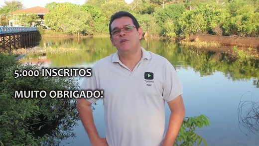

00:00:09.977
Emanuel Júlio está à beira d'água, diante da vegetação, ao lado de um letreiro de agradecimento pelos 5 mil inscritos.
Local não identificado
O apresentador agradece a marca de inscritos e retoma os primeiros meses de produção do canal.
Transcrição · 00:00:07 | 00:00:15
Turismo Aqui — quadro de vídeo publicado no YouTube